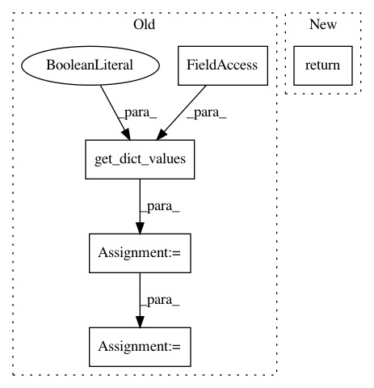

dbae22f30a6c49b4cdc90b5403436555fb3ad4fa,pixyz/distributions/mixture_distributions.py,MixtureModel,log_likelihood,#MixtureModel#Any#,120
Before Change
visible_dict = get_dict_values(x_dict, self._visible_var, return_dict=True)
loglike_all_hidden = self.log_likelihood_all_hidden(visible_dict)
hidden_sample_idx = get_dict_values(x_dict, self._hidden_var, return_dict=False)[0].argmax(dim=-1)
loglike = loglike_all_hidden[hidden_sample_idx, torch.arange(len(hidden_sample_idx))]
return loglike
After Change
def log_likelihood(self, x_dict):
// log p(x)
loglike = self.log_likelihood_all_hidden(x_dict)
return torch.logsumexp(loglike, 0)
def _log_likelihood_given_hidden(self, x_dict):
// log p(x, z)
visible_dict = get_dict_values(x_dict, self._var, return_dict=True)
In pattern: SUPERPATTERN
Frequency: 3
Non-data size: 5
Instances
Project Name: masa-su/pixyz
Commit Name: dbae22f30a6c49b4cdc90b5403436555fb3ad4fa
Time: 2019-01-02
Author: masa@weblab.t.u-tokyo.ac.jp
File Name: pixyz/distributions/mixture_distributions.py
Class Name: MixtureModel
Method Name: log_likelihood
Project Name: masa-su/pixyz
Commit Name: f7be4aa0fe70229549bb74b7e5834517224e5b1f
Time: 2020-08-02
Author: kaneko@weblab.t.u-tokyo.ac.jp
File Name: pixyz/distributions/distributions.py
Class Name: DistGraph
Method Name: sample
Project Name: masa-su/pixyz
Commit Name: f65dcae9367bc5a4355657026570af761c606382
Time: 2019-01-27
Author: masa@weblab.t.u-tokyo.ac.jp
File Name: pixyz/distributions/distributions.py
Class Name: MultiplyDistribution
Method Name: sample